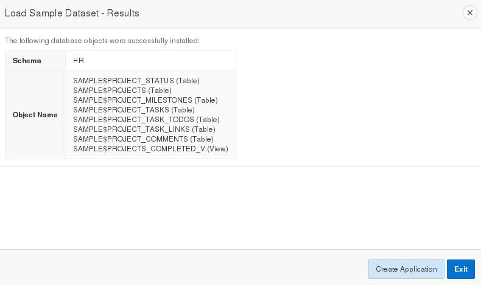
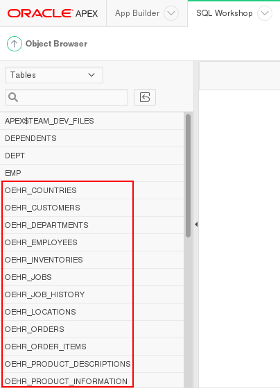

Oracle Application Express 18.1: Using REST Enabled SQL Service
Reference (3 of 4)
Before You Begin
This 10 minute tutorial shows you how to install the sample
dataset in the hr schema, and create a REST
Enabled SQL service reference from the obe schema
to the hr schema. This is the third tutorial in
the series Oracle Application Express 18.1: Using REST
Enabled SQL Service Reference. Read the tutorials in
sequence:
In this OBE, you will learn how to install the sample dataset Project
Data in the hr schema, and create a REST
enabled SQL service reference to the hr schema
from the obe schema.
What Do You Need?
Install the latest version of the Oracle VM VirtualBox
Download and import the Database App Development VM in to
the Oracle VM VirtualBox Note: SQL Developer 4.2, Oracle Database 12c, and
Oracle Application Express 18.1 are installed in the Database
App Development VM
Install
Sample Dataset in the hr Schema
In this section, you will learn how to log in to the hr
workspace and install the sample dataset Project Data.
To install the sample dataset:
In the Database App Development VM, click Start
to open the browser.
Click the APEX bookmark browser to sign
in to Oracle Application Express.
On the Oracle Application Express sign in page, enter the
following details:
Once the Project Data dataset installs, the Load Sample
Dataset - Results dialog opens. It displays the schema and the
objects that are present in the schema. At this point, you can
create an application or exit. In this tutorial, we will
create the application later. Click Exit.This
completes the task of installing the dataset Project
Data.  Description
of the illustration load_sample_dataset_results.png
Sign out of the hr workspace. This completes the task of
installing the sample dataset Project Data in the hr
schema.
Create
a REST Enabled SQL Service Reference
In this section, you will learn how to sign in to the obe
workspace , and create a REST Enabled SQL Service reference to
the hr schema. To create a REST Enabled SQL
Service reference:
Log in to the obe workspace using the
following credentials:
Workspace: Enter obe
Username: Enter obe
Password: Enter oracle
Click Sign In
In the Oracle Application Express home page, click SQL
Workshop.
Click Object Browser and check the tables that are
listed in the obe schema. Notice the obe
schema contains OEHR tables, and not the SAMPLE tables that
you noted in the hr schema.
 Description
of the illustration objects_obe_schema.png
Now, you will create a REST Enabled SQL reference to the hr
schema from the obe workspace here. Click App
Builder and click Workspace Utilities.
In Workspace Utilities, click REST Enabled SQL Services.
Click Create. The Create REST Enabled SQL Service
dialog opens.
In the Create REST Enabled SQL Service dialog, enter
the following details:
Name: Enter HR Schema
Endpoint URL: Enter http://localhost:8080/ords/hr Note: In this url, hr is the
schema name.
Click Close. This completes the task of creating the
REST Enabled SQL service reference to the hr
schema from the obe schema.
Click App Builder tab to go to the Application
Builder home page. You are now all set to create a new
application using the REST Enabled SQL service reference to
the hr schema.

 Before You Begin
Before You Begin Install
Sample Dataset in the hr Schema
Install
Sample Dataset in the hr Schema  Create
a REST Enabled SQL Service Reference
Create
a REST Enabled SQL Service Reference